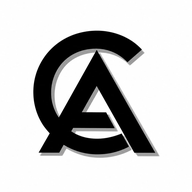

Tentang website
Portfolio untuk mendokumentasikan pengalaman PKL dan project belajar mandiri saya sebagai siswa Rekayasa Perangkat Lunak.

Brilliant Portfolio PKLPelajar RPL dan pengembang web pemula
Website ini merangkum perjalanan belajar saya selama Praktik Kerja Lapangan di JPT Retailindo dan JPT Groserindo, beserta project hasil belajar mandiri yang saya kerjakan selama PKL.

images/foto-utama.jpg
Ukuran saran 800×1000 px
Portfolio untuk mendokumentasikan pengalaman PKL dan project belajar mandiri saya sebagai siswa Rekayasa Perangkat Lunak.
Menjadi bahan presentasi PKL: menjelaskan siapa saya, apa yang saya pelajari, dan project apa yang saya hasilkan.
Profil (About), tiga keahlian utama (Skill), serta enam project pembelajaran mandiri (Project).

assets/images/foto-diri.jpg
Ukuran saran 800×1000 px
About
Saya Brilliant, siswa kelas XI Rekayasa Perangkat Lunak di SMK TI Bali Global Denpasar. Saya melaksanakan PKL di JPT Retailindo dan JPT Groserindo, Denpasar, pada 24 Juli sampai 21 Desember 2026.
Skill
Tiga fokus keahlian yang saya kembangkan melalui pembelajaran di sekolah, tugas PKL, dan eksplorasi mandiri.
Memahami struktur kode web, terbiasa memodifikasi template antarmuka, dan memecahkan kendala teknis secara mandiri.
Mengeksplorasi ragam model AI (ChatGPT, Gemini, Claude, agen coding) dengan prompting terstruktur dan pencegahan halusinasi.
Menyusun laporan pertanggungjawaban PKL dan dokumen formal dengan hierarki heading, tata letak, dan tabel yang terstandar rapi.
Project
Ini adalah hasil pembelajaran mandiri dari pemanfaatan waktu yang saya gunakan selama PKL.
Project yang didemokan langsung saat presentasi.
Lihat projectProject novel untuk belajar membuat pembaca terbawa oleh cerita.
Lihat projectWebsite untuk mempelajari komposisi tampilan, seperti teknik 60-30-10.
Lihat projectSimulasi luar angkasa untuk memahami konsep antariksa dan melatih prompting.
Lihat projectGame clicker, awal saya belajar konsep JavaScript dan perhitungan.
Lihat projectGame 3D berbasis bantuan AI dengan supply ide dan konsep mandiri, terinspirasi game grinding.
Lihat projectContact
Tertarik berdiskusi atau ingin mengetahui lebih lanjut mengenai project dan pengalaman PKL saya? Silakan hubungi saya melalui saluran di bawah ini.